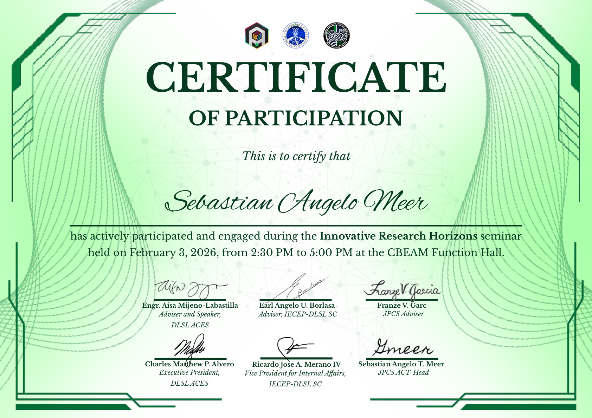
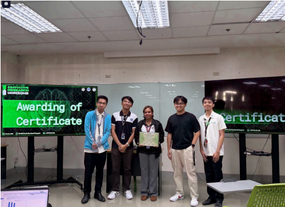

Innovative Research Horizons
Date: February 03, 2026
Organizers: Collaboration of Organizations (JPCS, IECEP, and ACES)
Speaker: Engr. Aisa Mijeno-Labastilla
Focus: AI, Machine Learning, Deep Learning, research innovation, Jupyter Notebook, and Anaconda


- Practical AI Use: AI and machine learning are not only theories. They are tools used in research, industry, and real project development.
- Jupyter Notebook Basics: The activity showed the actual interface used to handle data and test simple AI-related code.
- Project Development: Research involves testing, improving, and shaping an idea until it becomes a functional solution.
What I Learned?
I learned that emerging technologies become easier to understand when they are connected to actual tools and real problems. The speaker's discussion about socially useful technology, along with the Jupyter Notebook activity, helped me see how programming and data work together in AI-related research.
Impact On Me
The seminar made research feel more practical and reachable. It showed me that innovative projects do not start as perfect systems. They begin with a problem, a useful idea, and a process of testing and improvement.